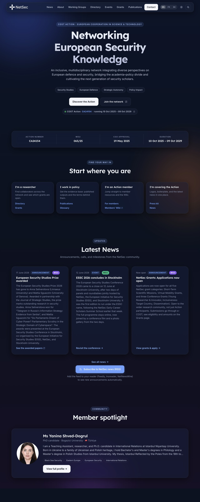
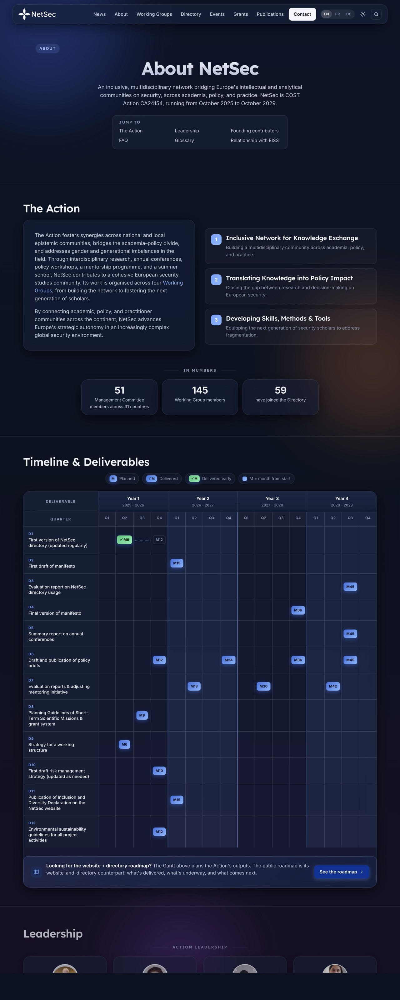
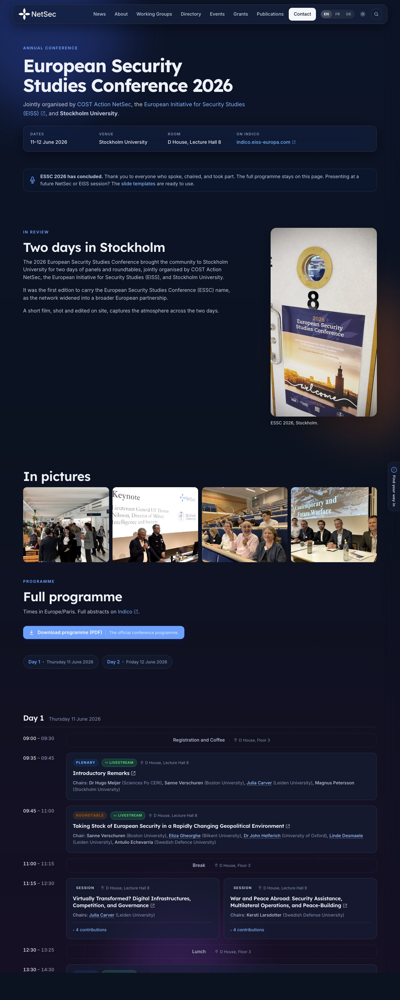
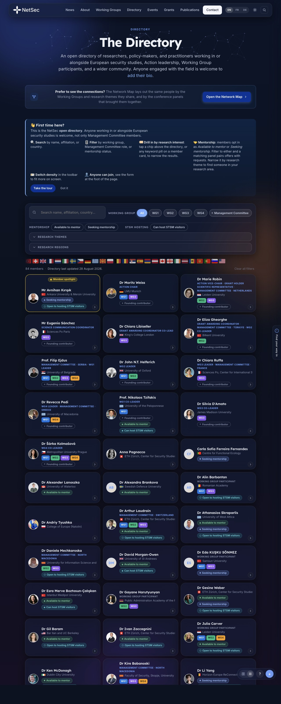
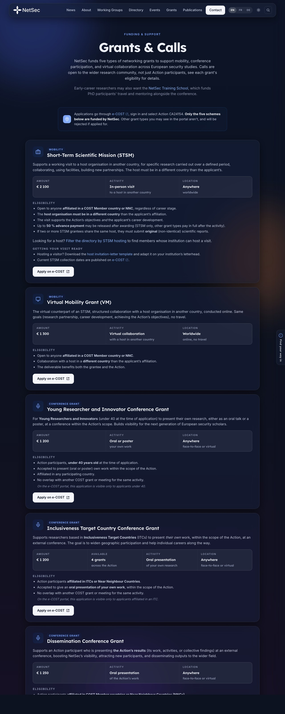
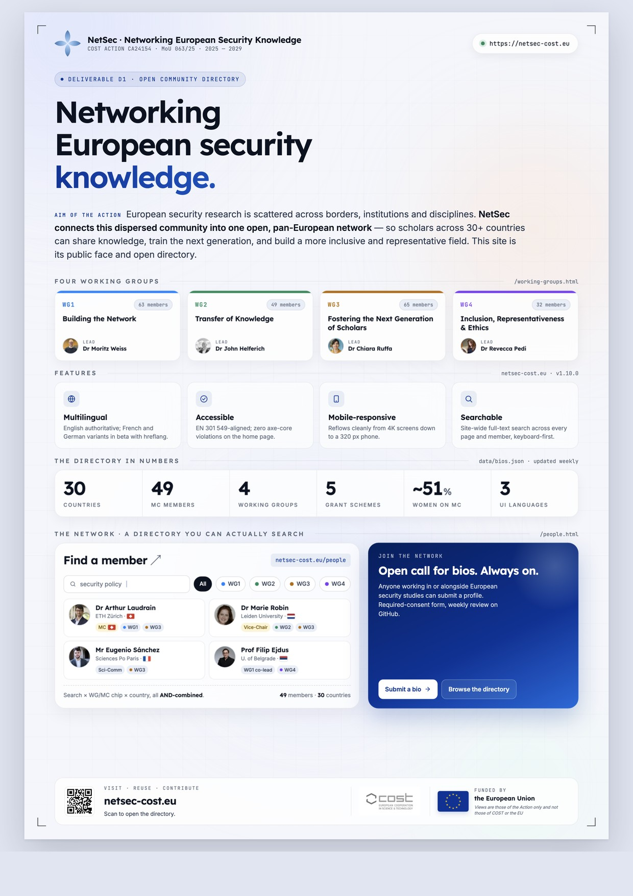

4 yrs
Action duration
 NetSec · CA24154
NetSec · CA24154
A snapshot of what netsec-cost.eu ships today — the people it covers, the funding it points to, the technology that holds it together, and the standards it meets.
A self-contained reference for everyone who builds on, hands over, evaluates, or simply uses the NetSec website. Each chapter stands alone; read end-to-end for a tour, or jump in by section.
Diagrams in this document are the same Mermaid sources that live in the docs/ folder of the GitHub repository. They render natively on github.com so anyone with read access can navigate the live versions there. The PDF embeds them as a frozen snapshot.
The NetSec website is the official front door of COST Action CA24154 — Networking European Security Knowledge, served at netsec-cost.eu. It is a static GitHub Pages deployment with two scheduled data-sync workflows and one third-party form processor. There is no database, no CMS, and no build step.
It doubles as Deliverable D1 of the Action's Memorandum of Understanding — the open community directory that the Action committed to publishing.
Every decision in the site's design weighs three audiences against each other. A change that helps one without hurting the others is good. A change that needs to "pick a side" probably isn't ready.
Anyone working in or alongside European security studies. The site explains what NetSec is, who's involved, what's on the calendar, and how to engage.
Practical resources: grant calls, the e-COST workflow, deliverables, the roadmap. The Directory and Grants page are written for them.
COST and the European Commission, for whom the site stands as visible evidence that Deliverable D1 has been met. Privacy compliance, accessibility statement, and licensing terms are written with them in mind.
#main.

The site is deliberately small. No framework, no transpiler, no bundler — just hand-authored HTML, one shared stylesheet, one shared script file, and two scheduled Python jobs that keep the data files in step with their upstream sources.
Three points to take from the diagram:
data/bios.json in the visitor's browser.Eighteen public pages in total (each with FR and DE beta siblings, plus a locale-detecting 404.html). The home page is the hub: it hosts most of the static content as anchored sections and signposts the discovery and reference pages and the members' Wiki through two dedicated home-page sections. Phase 1 of the v1.4.0 IA pass split the home page's denser blocks out into standalone pages (about.html, news.html, roadmap.html, outputs.html); v1.6.0 added the live ESSC 2026 programme page (essc-2026.html); v1.10.0 added the dedicated Working Groups page (working-groups.html); v1.12.0 added the NetSec Summer School page (summer-school.html), run jointly with EISS and co-located with the conference, then grew a dedicated Events page (events.html) gathering every NetSec event in one place. The directory also fans out into a generated profile page per member at people/<slug>.html (177 pages at the time of writing, three locales each), built by scripts/build-profile-pages.py and counted separately from the eighteen hand-authored pages. Three full-page applications, four reference pages branched off Home, the live conference programme, the Summer School and the Events page, and four statutory pages branch off the hub.
people/<slug>.html, omitted here for legibility. Dashed grey arrows are footer-only links (Accessibility, Privacy, Licensing, Site map appear in every page's footer). Dashed blue arrows between people and grants are in-page cross-links between the Network and Grants pages.| Page | Purpose | Reads at runtime |
|---|---|---|
index.html | Overview, news lede, WGs, MC, events banner, Find out more discovery grid, For NetSec members Wiki signposting strip, contact. Trimmed by ~25% in v1.4.0 when the standalone About / News / Roadmap / Outputs pages took over the denser blocks. | data/events.json (events banner; added v1.6.0) |
people.html | Open community directory with WG / MC / country filters; Join-the-network CTA. Directory research-interest keyword filter added v1.7.0; research-theme and mentorship filters and a native mobile filter sheet added v1.11.0; a quiet "Founding contributor" badge for the founding cohort added v1.12.0. | data/bios.json (all), data/keyword-aliases.json (inline fallback normaliser; added v1.7.0) |
people/<slug>.html | One shareable profile page per directory member, generated by scripts/build-profile-pages.py with its own Person structured data, an ORCID-fed recent-publications list, research-theme and region chips, and "works on similar topics" facepiles that cross-link related members and mentors. A CI gate fails any PR whose member data changed without regenerating the pages. Added post-conference in the v1.12.0 cycle. | data/authors-index.json (Anthology slot); otherwise static, derived at build time from data/bios.json and data/orcid-works.json |
grants.html | Five grant schemes, the e-COST timeline, resources, grant-manager contact cards. | data/bios.json (Grant Awarding Coordinator only) |
working-groups.html | The four Working Groups, each an anchored section with its MoU objective, focus areas, lead and co-lead, an expandable member grid rendered live from the COST directory, and a Related events block. Opens with overall stats (people, countries, groups). Added v1.10.0. | data/wg.json (leadership + members), data/bios.json (photos + affiliations), data/events.json (related events) |
about.html | Standalone About page: mission, deliverables, Find out more discovery grid, milestones. Added v1.4.0. | — |
news.html | Standalone news index, lifted out of the home page. Added v1.4.0. | — |
roadmap.html | Public product roadmap with planned / in-progress / shipped cards; collapsible Shipped list (collapse added v1.6.0; only the most recent releases show by default). Added v1.4.0. | — |
outputs.html | Outputs page (placeholder for COST deliverables, papers, training-school materials). Added v1.4.0. | — |
essc-2026.html | Live ESSC 2026 programme: day chips, plenary and parallel session cards, contributions, chairs, abstracts, room badges, livestream pills, member-aware speaker popovers. Added v1.6.0; speaker popover deduped onto the shared window.netsecMemberCard component v1.12.0. | data/indico.json, data/bios.json (for member-aware speaker links) |
summer-school.html | NetSec Early-Career Scholars Summer School (ECS³), run jointly with EISS. Card-based page with a faculty roster whose member headshots resolve live from the directory by name, an EISS partner block with an inline logo, an application contact, and a heritage note placing it as the successor to Euro-SWAMOS. Added v1.12.0. | data/bios.json (faculty headshots, matched by name) |
events.html | Every NetSec event in one place: upcoming and past, each card carrying dates, venue, format, and a link to its programme or registration. The conference pages settled into a fixed archive once Stockholm closed, and this page became the living index over them. Added post-conference in the v1.12.0 cycle. | data/events.json |
faq.html | 21 Q&As across six themed sections; jump-to TOC; per-question deep-link anchors. Added v1.3.0; migrated from the members' Wiki. | — |
glossary.html | ~35 COST and NetSec terms across five sections; per-term deep-link anchors. Added v1.3.0; migrated from the members' Wiki. | — |
press-kit.html | Logos with pairing rules, palette, typography, funding acknowledgements, attribution wording, do / don't rules. Added v1.2.0. | — |
sitemap.html | User-friendly site map linking every page and every in-page anchor. | — |
accessibility.html | WCAG 2.1 conformance statement. | — |
privacy.html | GDPR-compliant privacy notice. | — |
licensing.html | Dual-licence posture (MIT for code, CC BY 4.0 for prose) with the carve-outs spelt out. Split off from privacy.html §10. | — |
IntersectionObserver.backdrop-filter; graceful fallback./essc-2026.html (added v1.6.0). Rebuilt daily from Indico via sync-indico.py. Day chips, parallel-session cards, livestream badges on plenaries, per-session room badges (v1.6.1), member-aware speaker popovers that resolve to a NetSec member card with photo, role, country, and bio excerpt.data/keyword-aliases.json, plus a filter chip row above the grid with URL-hash persistence (#keywords=slug-one,slug-two) and OR semantics across selected chips. Top-8 chips shown by count./calendar.ics (added v1.4.0). The events block carries a webcal:// Subscribe button. The feed is regenerated whenever events.json changes (v1.6.1).sync-bios.yml (Google Form to bios.json), sync-indico.yml (Indico to indico.json with events.json and calendar.ics patched in the same PR), and sync-roadmap.yml (autostamp on docs/roadmap-2026.md after changelog merges). All three auto-merge once review passes.data-bios-roles attribute pattern: any element with it gets hydrated from bios.json at load.mc-members.json.scripts/release.sh (v1.7.0): promote-roadmap.py flips public roadmap cards from planned to shipped on /roadmap.html in EN, FR and DE during release; a PDF-cover-bump reminder prints on minor and major releases; open issues tagged with the milestone being cut are listed before the script exits.scripts/check-css-class-collisions.py (added v1.6.0).sync-bios.py (added v1.5.0) so unchanged upstream photos do not get re-encoded and dirty the working tree.spotlight-rotate.yml + rotate-spotlight.py, added v1.11.0): a weekly balanced-rotation score over bios.json (early-career and ITC boosts, Working-Group balance, recency hold-out) picks the featured member and opens an auto-PR. A pinned field in data/spotlight.json is the manual override and the way to correct any imbalance, since gender is deliberately not scored.The end-to-end path for a new member submission, from filling in the form to the live directory.
The path from a daily change inside the Indico instance to the rendered programme on /essc-2026.html. The events-block banner on the home page is patched in the same run so the public surface does not drift from the live programme.
Whenever the changelog gains a new entry on main, the public roadmap's autostamped block in docs/roadmap-2026.md is rewritten to reflect the new release surface.
roadmap.html directly: it only refreshes the markdown autostamp block read by Action evaluators.News on the site (and the weekly member spotlight) can be reposted to Bluesky, with a human approval step before anything goes public. The pipeline is a consumer of surfaces that are already published, so it never invents content: it reposts the RSS feed and the rotated spotlight. Two posting paths run side by side, with different risk profiles.
The news / curated-thread path is approval-gated: a job pauses inside the social environment until a required reviewer reads the exact post and approves it. A news item can opt out, or hand itself to a hand-written multi-post thread, through a social field in data/news.json. The weekly spotlight path is treated as low-risk and posts ungated from the rotation workflow inside a separate social-auto environment. Both paths share one dedup ledger (data/social-posted.json), so nothing is ever posted twice.
social gate protects both the action (posting) and the access: the Bluesky credentials are environment secrets, released only after a reviewer approves. The dedup key is the news item id (its <guid>), not the link, so two items pointing at the same page never collide.Every directory member has a personal Open Graph image at assets/og/people/<slug>.png, so sharing their profile unfurls as that person rather than the generic site card. These are never hand-drawn: member data flows in from the weekly bios sync, and scripts/build-og-cards.py derives and commits the cards.
A card is keyed by a hash of exactly the fields it shows (name, role, affiliation, country and flag, headshot path plus the photo's SHA-256, working-group pills, mentorship, STSM hosting). The builder re-renders only the members whose hash changed or whose PNG is missing, recorded in _manifest.json, so the weekly auto-PR stays churn-free instead of rewriting dozens of binaries. Editing research keywords alone does not re-render a card, because keywords are not on it.
--screenshot CLI flag, which on macOS subtracts the window chrome and clips the footer. A --check gate in CI fails any PR whose data changed without its card, so a card can never drift behind the data.
netsec-cost.eu/essc-2026.html.
.
├── index.html # Home
├── about.html # About (v1.4.0)
├── news.html # News index (v1.4.0)
├── roadmap.html # Public roadmap (v1.4.0)
├── outputs.html # Outputs placeholder (v1.4.0)
├── essc-2026.html # ESSC 2026 live programme (v1.6.0)
├── working-groups.html # The four Working Groups (v1.10.0)
├── summer-school.html # Summer School ECS³ (v1.12.0)
├── events.html # Events index (v1.12.0)
├── people.html # The Directory
├── people/<slug>.html # Generated per-member profile pages (v1.12.0)
├── grants.html # Grants & Calls
├── faq.html # Public FAQ
├── glossary.html # COST + NetSec terminology
├── press-kit.html # Logos, palette, funding acknowledgements
├── accessibility.html # WCAG statement
├── privacy.html # GDPR notice
├── licensing.html # Dual-licence posture
├── sitemap.html # User-friendly site map
├── 404.html # Locale-detecting not-found page
├── *.fr.html *.de.html # French + German beta of every page above
│
├── sitemap.xml # Machine-readable sitemap, hreflang siblings
├── calendar.ics # iCalendar feed (v1.4.0); regenerated on events.json change (v1.6.1)
├── CNAME # GitHub Pages → netsec-cost.eu
│
├── assets/
│ ├── css/site.css # Single shared stylesheet
│ ├── js/site.js # Nav, theme, reveal, tour, netsecT()
│ ├── js/people-directory.js # Shared directory renderer, one module for all three locales (v1.12.0)
│ └── images/people/*.{jpg,png} # Member headshots
│
├── data/
│ ├── bios.json # The directory
│ ├── mc-members.json # MC roster per country
│ ├── events.json # Home-page event banner schema (v1.6.0); carries indicoEventId
│ ├── indico.json # Synced ESSC 2026 programme (v1.6.0)
│ ├── wg.json # Per-WG leadership + members from cost.eu (v1.10.0)
│ ├── roadmap-progress.json # GitHub milestone progress for the roadmap (v1.10.0)
│ ├── keyword-aliases.json # Curated acronyms + alias map for directory keywords (v1.7.0)
│ ├── orcid-works.json # ORCID publications cache feeding cards + profile pages (v1.12.0)
│ └── i18n-state.json # SHA-1 stamps for drift checker
│
├── scripts/
│ ├── sync-cost.py # cost.eu → WG_MAP + roles + data/wg.json
│ ├── sync-bios.py # Google Form → bios.json (photo SHA-256 cache v1.5.0;
│ │ # canonical_keywords + keyword_aggregate v1.7.0)
│ ├── sync-indico.py # Indico → indico.json + events.json + calendar.ics (v1.6.0)
│ ├── sync-roadmap.py # CHANGELOG → docs/roadmap-2026.md autostamp (v1.7.0)
│ ├── promote-roadmap.py # Flips public roadmap cards planned→shipped on release (v1.7.0)
│ ├── test-sync-bios.py # Pipeline tests
│ ├── test-sync-indico.py # Pipeline tests
│ ├── inject-seo.py # Canonical + OG + JSON-LD generator
│ ├── build-profile-pages.py # Renders people/<slug>.html from bios + ORCID works (v1.12.0)
│ ├── check-i18n-drift.py # Reports stale translations
│ ├── check-css-class-collisions.py # Lints accidental class-name reuse (v1.6.0)
│ ├── check-a11y.sh # axe-core scan wrapper
│ ├── check-links.sh # Internal-link checker
│ ├── release.sh # Cuts a tagged release; calls promote-roadmap on release day (v1.7.0)
│ ├── bios-source.json # Pipeline config
│ └── requirements.txt
│
├── .github/workflows/
│ ├── sync-cost.yml # Weekly cron
│ ├── sync-bios.yml # Weekly cron, opens PR + auto-merges
│ ├── sync-indico.yml # Daily cron, opens PR + auto-merges (v1.6.0; PR-based v1.6.1)
│ ├── sync-roadmap.yml # Fires on CHANGELOG.md changes to main (v1.7.0)
│ └── i18n-drift.yml # Runs drift checker on HTML PRs
│
├── docs/ # Internal documentation
│ ├── architecture.md design-system.md admin-guide.md
│ ├── i18n.md seo.md bios-setup.md
│ ├── roadmap-2026.md # AUTOSTAMP block written by sync-roadmap.py
│ ├── pdf/ # Source for this documentation pack
│ └── promo/ # Promotional poster (A3) + card-size
│
├── CHANGELOG.md # Keep a Changelog, SemVer 2.0.0; hybrid lede + themes + index format (v1.5.0)
├── LICENSE # MIT (code)
├── LICENSE-CONTENT # CC BY 4.0 (prose)
├── README.md
└── SECURITY.md
slugify() in both Python scripts (strip salutation, drop diacritics, drop apostrophes, lowercase, hyphenate). Both scripts must agree or member IDs drift.id on member cards so /people.html#arthur-laudrain resolves.The site follows an Apple-inspired glassmorphism language layered onto EU and COST brand colours. It should feel modern, trustworthy, and Brussels-adjacent without ever feeling corporate.
Defined in assets/css/site.css on :root (light) and :root.dark (dark). Always reference the token, never the raw hex.
| Token | Light value | Used for |
|---|---|---|
--bg-0 | #f6f8fc | Page background |
--bg-1 | #eef2fb | Slight elevation backdrop |
--ink | #0b1220 | Headings, primary copy |
--ink-2 | #2b3850 | Body copy, sub-headings |
--muted | #5a6679 | Captions, meta, fineprint |
--line | rgba(11,18,32,.08) | Dividers, low-emphasis borders |
--glass-bg | rgba(255,255,255,.55) | Default glass card fill |
--glass-bg-strong | rgba(255,255,255,.72) | Sticky nav, opaque cards |
--accent | #003399 EU blue | Primary buttons, focus rings, accents |
--accent-2 | #0a84ff Apple blue | Hyperlinks, secondary accent |
--accent-glow | rgba(10,132,255,.35) | Soft glow under hovered buttons |
--ease | cubic-bezier(.22,.61,.36,1) | Default transition curve |
Dark theme inverts --bg-*, --ink*, --line, and --glass-* but keeps --accent and --accent-2 identical so brand colour is constant across modes.
Both faces load once from Google Fonts via a <link rel="preconnect"> + stylesheet pair in every page's <head>. Heading hierarchy across the site:
| Level | Count | Example |
|---|---|---|
h1 | 1 per page | "The Directory", "Grants & Calls" |
h2 | 6–9 | Major sections |
h3 | ~20 | Sub-sections, member names |
h4 | ~18 | Card titles, country names |
Never skip a level (no h2 → h4).
Every distinct visual element belongs to a small, named set of CSS classes. Reuse the existing ones; don't introduce parallels.
.glassThe workhorse card — semi-transparent fill, blurred backdrop, soft shadow, hover lift. Used for news cards, member cards, country cards, grant cards, the search toolbar, and more.
.btn / .btn-primary / .btn-ghostPrimary fills with --ink, hover shifts to --accent. Ghost is transparent with a border and a slight hover lift.
.chip / .wg-chipPill-shaped labels. Working-Group chips are colour-coded 1–4 so a viewer can scan a member card and place them by colour alone.
.timelineVertical timeline on the Grants page — gradient rail with numbered nodes, Before / During / After phase pills, dashed-circle divider at the activity boundary.
.mc-statsThree-up snapshot on the home page (49 reps, 30 countries, ~51 % women). Stacks to one column on phones.
.members-toolbarToolbar at the top of the Directory page. Free-text search + WG / MC chip + country dropdown — all AND-combined by the directory's render loop.
Two SVG styles coexist by design:
| Style | When to use | Source |
|---|---|---|
| Stroke | Generic glyphs (envelope, globe, briefcase, microphone) | Lucide-style: stroke="currentColor", stroke-width="1.9", fill="none" |
| Filled brand | Recognisable brand marks (ORCID, LinkedIn, X, Bluesky, Mastodon) | Simple Icons SVG paths; fill="currentColor" (ORCID in brand green via .contact-orcid) |
Same-concept-same-icon rule: every conference grant uses the same microphone icon; every contact-item uses the same envelope. Consistency lets users build muscle memory for what an icon means.
.reveal — fades in + slides up 12 px when intersecting the viewport. Default state is visible; the fade only engages once JS has confirmed the observer fires. If JS fails for any reason, content stays visible — never invisible..blob — three large translucent radial blobs in .ambience, drifting on a 22–34 s loop. Pure decoration; aria-hidden="true".translateY(-4px) + shadow swap.:focus-visible style).aria-label on icon-only buttons; title for hover hints.:hover alone.prefers-reduced-motion.#top (home) or #main (other pages).The NetSec site ships in three languages: English (authoritative), French (beta), and German (beta). Every public page has a sibling at page.fr.html and page.de.html, surfaced through a language switcher in the header.
The Action has no recurring translation budget and no plan for a paid translation API. Translations are authored by hand, once, and refreshed only when English drifts meaningfully. The site never makes a translation API call at build or runtime.
The switcher in the header is implemented as three sibling <a> links — not a JS routing trick. Clicking FR on /people.html navigates to /people.fr.html. The page that gets served is the page the visitor lands on; there is no rewrite layer.
Three pieces of state cooperate:
<html lang="…"> on every variant — drives :lang() selectors and assistive-tech voice.localStorage.netsec-lang — the visitor's saved preference. On any home-page hit (/, /index.fr.html, /index.de.html), assets/js/site.js reads this and silently redirects to the saved variant if it differs from the URL.<link rel="alternate" hreflang="…"> blocks in every page's <head> — tell search engines which URLs are language variants of each other (and which is x-default).| Content type | Translated? | Why |
|---|---|---|
| Page chrome — nav, footers, headings, form labels, captions | Yes | Hand-authored in each .fr.html / .de.html file. |
| JS-rendered strings (search placeholder, "No results", toast confirmations) | Yes | Loaded via window.netsecT() from a per-locale catalog in assets/js/site.js. |
Member-submitted bios in data/bios.json | No | Members write their own bio in whichever language they choose; we don't paraphrase someone else's self-description. |
| Calls of grants, dates, place names | No (kept in source language) | Calls are authoritative documents; translating them risks introducing error. |
| COST / EU boilerplate (funding statement, emblem alt-text) | Yes | Translations exist in COST's official toolkit; we reuse those. |
Components added in v1.4.0, v1.6.0 and v1.7.0 follow the same posture: Pagefind search (the search overlay's placeholder, no-results message, keyboard-shortcut hint), the ESSC programme renderer (day-chip labels, session-card chrome, livestream and room-badge text), and the directory keyword filter (chip-row heading, clear-filters button, the "X of Y members" counter) all route their runtime label strings through window.netsecT(), the in-browser translation helper defined in assets/js/site.js. Member-submitted content (bios, Indico contribution abstracts, keyword text) remains unmodified in whatever language it was authored in; only the surrounding chrome is translated.
Hand-translated sibling files drift out of sync whenever English changes and the translator forgets to update FR/DE. To make that visible, we maintain a small manifest at data/i18n-state.json that stamps a SHA-1 of each English source page at the moment its translations were last refreshed.
Run locally:
python3 scripts/check-i18n-drift.py # report which pages have drifted
python3 scripts/check-i18n-drift.py --stamp en # refresh EN sha after editing English
python3 scripts/check-i18n-drift.py --stamp fr # mark FR refreshed for changed pagespeople.html).people.fr.html and people.de.html by hand. Keep tag names, IDs, class names, and href targets identical; only translate text content and certain visible attributes (title, aria-label, alt).--stamp en --stamp fr --stamp de to refresh all three./fr/people). The static sibling-files approach keeps GitHub Pages routing simple, lets us version each translation independently, and removes any need for server-side logic.The site implements the industry-standard SEO checklist for a multilingual static site: machine-readable sitemap, canonical URLs, hreflang annotations, Open Graph + Twitter Card metadata, JSON-LD structured data, and a designed 404 page. None of it is hand-typed twice — a single Python script regenerates the per-page metadata block from a small source-of-truth.
| Layer | Where | What it does |
|---|---|---|
| Crawl directives | robots.txt at site root | Allow: /; points crawlers at sitemap.xml. No private paths to disallow. |
| Discovery | sitemap.xml at site root | Every public page with <lastmod>, <changefreq>, <priority>, and xhtml:link hreflang annotations for FR/DE/x-default. |
| Canonical URLs | <link rel="canonical"> on every page | Points at the page's own URL — keeps the .fr.html / .de.html variants from looking like duplicates. |
| Language alternates | <link rel="alternate" hreflang> blocks | Matches the sitemap; explicitly declares x-default → English. |
| Open Graph | og:title / og:description / og:url / og:type / og:image / og:site_name / og:locale | One block per page, locale-aware. |
| Twitter Card | summary_large_image | Title / description / image mirror the OG values. |
| JSON-LD | <script type="application/ld+json"> per page | Organization schema on every page; WebSite on /; per-page WebPage. |
| Social-share image | assets/images/og-image.png | 1200 × 630 branded card used by Facebook, Twitter/X, LinkedIn, WhatsApp, Slack, Discord, iMessage. |
| Theme colour | <meta name="theme-color" content="#003399"> | Mobile browser chrome adopts the EU blue. |
| 404 page | 404.html at site root | Served by GitHub Pages on any unknown URL. Auto-detects browser language and points the visitor back at the right localised home. Carries noindex. |
inject-seo.pyThe OG / Twitter / canonical / JSON-LD blocks are generated, not hand-typed. The generator lives at scripts/inject-seo.py and is idempotent: it looks for sentinel comments (<!-- seo:auto BEGIN --> and <!-- seo:jsonld BEGIN -->) and rewrites the block in place, or inserts a fresh one between the hreflang block and <link rel="icon">.
PAGES table, and writes two sentinel-bracketed blocks into each page's <head>.Use:
python3 scripts/inject-seo.py # rewrites the SEO block in every HTML file
python3 scripts/inject-seo.py --check # report-only mode (non-zero exit on drift)<title> (≤ 60 chars) and <meta name="description"> (≤ 160 chars).<link rel="alternate" hreflang> block in <head> for EN/FR/DE/x-default.<html lang="…"> correctly.PAGES list at the top of scripts/inject-seo.py, then run the script.<url> entry to sitemap.xml.data/i18n-state.json and stamp the EN SHA.| Thing | Why |
|---|---|
| Google Analytics / Tag Manager | Privacy posture — no third-party trackers (see privacy.html). |
<meta name="keywords"> | Ignored by all major search engines for ~15 years. |
| AMP / amp-html | Performance budget is already very low; AMP would add complexity without measurable gain. |
rel="prev" / rel="next" pagination | No paginated content on the site. |
| hreflang on sub-page anchors | hreflang applies to URLs, not anchors. Deep-links into a translated page inherit the page's lang. |
Content-Language, Vary: Accept-Language, and similar headers are unavailable. The <html lang> attribute is the next-best signal and is in place.Accept-Language only works after the page loads. We do the redirect client-side via the saved netsec-lang preference, so the very first hit always lands on whatever URL the visitor typed.This section answers: "It's six months later, the maintainer is on parental leave, something needs editing — where do I start?"
| Asset | Location | Owner / login |
|---|---|---|
netsec-cost.eu | Namecheap | Registered under Dr Moritz Weiss (Action Chair); admin contact Dr Arthur Laudrain |
| GitHub Pages routing | Repo Settings → Pages | GitHub org EISSeuropa |
| TLS certificate | Auto-managed by GitHub Pages | n/a (Let's Encrypt) |
| Asset | Login | Notes |
|---|---|---|
GitHub repositoryEISSeuropa/netsec.github.io |
GitHub account in the EISSeuropa org |
Action Chair, Vice-Chair, maintainer. |
| Google Form "Join the NetSec network" | Google account that owns the form | URL stored in scripts/bios-source.json → form_url. |
| Linked Google Sheet | Same Google account | Publish-to-web enabled (CSV). Required-consent step on the form gates what reaches it. |
| Published CSV URL | n/a (public capability) | Stored in scripts/bios-source.json → csv_url. Anyone with the URL can read the Sheet — the form's required-consent step is what gates the content. |
Formspree project (id meenwyrb) |
Formspree account | Free tier; submission destination is the Action mailbox. |
Every admin task below assumes at least two people hold EISSeuropa org membership with Maintain permission on the repository. If that drops to one, escalate.
| Asset | Location | Licence |
|---|---|---|
| COST logo | assets/images/cost-logo.jpg | © COST Association — used per COST visual-identity guidance. |
| EU emblem | Inlined SVG in every footer | Used per the EU visual-identity manual for Funded by the EU communication. |
| NetSec wordmark | Pure CSS letter-mark — no asset | © COST Action NetSec. |
| Member headshots | assets/images/people/<slug>.* | © the individual, displayed with consent. |
| Country flags | FlagCDN (loaded at runtime) | Flags themselves public domain; CDN MIT. |
Three sync workflows now open pull requests against main on dedicated automation branches. Any of them may be empty in a given run; that is a feature, not a bug.
| Workflow | Cadence | Branch | What the diff covers |
|---|---|---|---|
sync-bios.yml | Weekly (Mondays 05:15 UTC) | bios-sync/auto | New or edited bios in data/bios.json plus any photo updates under assets/images/people/. Reviewer attention focuses here, since every new bio passes through a human's eyes. |
sync-indico.yml | Daily | indico-sync/auto | Refresh of data/indico.json from the Indico instance; when events.json carries a matching indicoEventId, the home-page banner summary / start / end and calendar.ics are patched in the same PR. Skim the diff for sensible session titles, room names, and speaker spellings. |
sync-roadmap.yml | On CHANGELOG.md changes to main | roadmap-sync/auto | Rewrite of the AUTOSTAMP block in docs/roadmap-2026.md: counts of bullets per category in [Unreleased] plus the latest SemVer tag. No public-page impact; safe to auto-merge once it looks coherent. |
The reviewer's job is not to fact-check research claims; it is to catch:
members[] entry from data/bios.json.assets/images/people/<slug>.jpg if present.bios: remove <slug> on request.The Google Form is the primary submission surface for bios. Two caveats worth knowing:
assets/images/people/<slug>.jpg directly and either drop the corresponding photo-source SHA-256 entry or update it to match the new file, so that sync-bios.py does not overwrite the new image on the next run.git checkout -b copy/<short-description>*.html file.http://localhost:8000.GitHub Pages rebuilds in ~30 seconds after merge.
The repository follows Semantic Versioning 2.0.0 from v1.0.0 onwards. The full convention (what MAJOR / MINOR / PATCH mean for a website + directory + docs deliverable) is in README.md → "Versioning"; the running history is in CHANGELOG.md at the repository root.
A release is cut whenever a milestone is worth marking — typically at the close of a sprint of substantive work, or after a noteworthy fix. The mechanics are wrapped in scripts/release.sh so the whole sequence is a single command:
[Unreleased] section of CHANGELOG.md via each PR. Keep the format consistent (subheadings such as Added, Changed, Fixed, Security).main is in sync with origin/main, then run:
scripts/release.sh 1.1.0 # the version number you're cutting
scripts/release.sh 1.1.0 --dry-run # preview, change nothingmain, clean tree, in sync with origin, tag not yet used), promotes [Unreleased] to [1.1.0] · YYYY-MM-DD, resets a fresh [Unreleased], updates the compare-link block, commits, pushes, creates an annotated v1.1.0 tag on the new commit, pushes the tag, and finally calls gh release create with the changelog body as the release notes.scripts/promote-roadmap.py (added v1.7.0), which flips matching cards on the public roadmap from planned to shipped across /roadmap.html, /roadmap.fr.html and /roadmap.de.html in one pass.gh CLI installed and authenticated against EISSeuropa/netsec.github.io.main (no branch-protection rule blocking direct push for release commits).main.For changes that warrant a documentation-pack refresh, also bump the version stamp on the cover and run ./docs/pdf/build.sh before tagging. The PDF carries its own version stamp on the cover and its own changelog in Appendix D — the two version axes are independent for historical reasons (see the v1.3.0 entry of this pack's own changelog appendix).

| Symptom | First port of call |
|---|---|
| Site returns 404 / 500 | githubstatus.com |
| Sync workflow fails | Actions tab → click the failed run → scroll to the red step |
| Form submissions stop arriving | Formspree dashboard |
| New bio doesn't appear after Monday's sync | Check Google Sheet (row present? consent ticked?) → manually trigger Sync member bios |
| Suspected security issue | Follow SECURITY.md — do not open a public issue |
| DNS / domain issue | Registrar admin; GitHub Pages settings as sanity check |
The branch-protection ruleset's bypass is keyed to the repo Admin role, so the role transfer needs care — get it wrong and release.sh stops working until a re-grant. The full version is in docs/admin-guide.md; the headline items:
EISSeuropa org with the Admin role on this repo (not Maintain or Write). The Admin role is what permits the release.sh bypass against protect-main.Maintain separately — the Admin role is for the release-cutter only.Contents: read+write, Pull requests: read+write, Issues: read+write, Workflows: read+write, Administration: read+write.gh api /repos/EISSeuropa/netsec.github.io/rulesets.Administration to Read. Steady-state automation does not need write. The ruleset bypass that lets release.sh push the changelog-promotion commit through protect-main is keyed to the user's repository role (Admin), not to the PAT's Administration permission — so the release pipeline continues to work unchanged. Read-only access still allows gh api .../rulesets for future verification. Re-grant read+write temporarily only when a ruleset adjustment is needed (and prefer the GitHub UI for one-off tweaks).docs/.scripts/release.sh 0.0.0 --dry-run from a synced main. The pre-flight should report "✓ On main, clean, in sync with origin, v0.0.0 is fresh" and stop there. A dry-run changes nothing.protect-main disappears the moment their Admin role is removed — GitHub re-checks on every push, no caching to worry about.Security is treated as a continuous practice rather than a one-time review. The full coordinated-disclosure policy lives in SECURITY.md at the repository root; this chapter summarises what is in place, what is automated, and what is the responsibility of the human admins.
The site is a static HTML deployment with no server-side code, no database, and no authenticated user surface. The classical injection bug-classes (SQL, RCE, deserialisation, SSRF) do not apply because nothing on the server interprets user input. The realistic risk surface narrows to four areas: (1) the contributor pipeline — a compromised GitHub account with push access, (2) the two sync workflows pulling data from external sources, (3) the third-party processors we depend on (Formspree, Google, GitHub Pages itself), and (4) personal data we hold in data/bios.json. The controls below are sized for that surface.
The shape of SECURITY.md:
In scope: the current main branch, the deployed site at netsec-cost.eu, the two GitHub Actions, the Python sync scripts, and any personal data we hold.
Out of scope: older branches, tags, or forks; reports about COST or EU branding; volumetric DoS against third parties (GitHub, Formspree, Google). Those go to the relevant vendor.
Two private channels, never a public GitHub issue:
github.com/EISSeuropa/netsec.github.io/security/advisories/new.| Stage | Target |
|---|---|
| Acknowledgement | Within 5 working days. |
| Initial assessment | Within 14 working days. |
| Resolution — Critical | Patch in days; hotfix to main. |
| Resolution — High / Medium | Next sprint, typically 2–4 weeks. |
| Resolution — Low | Routine maintenance. |
| Disclosure | Coordinated; credit on request. |
Good-faith research is welcomed: act only against your own data and the public site, avoid privacy violations and service disruption, do not retain personal data of others, and give us reasonable time to fix before public disclosure.
The repository is enrolled in five GitHub Advanced Security features. They run continuously, with results visible under the Security tab.
| Feature | Trigger | What it does |
|---|---|---|
| Private vulnerability reporting | Researcher submission | Offers external reporters a confidential channel inside GitHub, with end-to-end encryption and the option to collaborate on a fix in a private fork before public disclosure. Replaces the older "find an email address" route. |
| Security advisories | Maintainer-initiated, post-triage | Records every confirmed vulnerability as a draft advisory, links it to the fix commit, and publishes a CVE when warranted. Provides a single audit trail for evaluators. |
| Dependabot alerts | Continuous | Scans the dependency graph (Python requirements.txt, GitHub Actions versions) against the GitHub Advisory Database. Opens an issue per advisory with an upgrade path. |
| Code scanning — CodeQL | push + pull_request against main, plus a weekly cron |
Runs the security-and-quality and security-extended CodeQL query suites at the high-precision setting, across HTML, JavaScript, Python, and GitHub Actions YAML. Findings appear as PR review comments and on the Security tab. |
| Secret scanning + push protection | Every push and historical sweep | Detects exposed tokens, API keys, and high-entropy strings matching known provider patterns. Push protection blocks the commit at git push time before the secret enters history. |
The site itself has almost no executable code, but the sync workflows execute trusted Python with broad repo-write capabilities. Treating the build pipeline as a first-class security target, rather than just the deployed pages, is what these five tools collectively achieve.
uses: references in .github/workflows/ are pinned to a major version tag (and where practical, to a commit SHA), so an upstream tag retag cannot inject new code without our review.GITHUB_TOKEN. Each workflow declares the narrowest permissions: block it needs (contents: write for the sync jobs, contents: read elsewhere). The default token is read-only at the repository level.main. Sync workflows do not auto-merge; they open a pull request and wait for a human reviewer. New bios are explicitly reviewed before going public.data/bios.json, data/mc-members.json) are version-controlled. Any malicious or accidental change is one git revert away.Two repository rulesets enforce the boundary between routine and catastrophic operations on this repo. Together they guard against the classes of change that would otherwise bypass review — rewriting main's history, deleting the deployed branch, or silently re-pointing a published version tag.
| Ruleset | Target | What it enforces | Bypass |
|---|---|---|---|
protect-main |
Default branch (main) |
Restricts deletions; restricts force-pushes (no bypass);
requires linear history; requires a pull request before
merging; requires conversation resolution; restricts merge
methods to squash; requires all four CodeQL status
checks (CodeQL, Analyze (actions),
Analyze (javascript-typescript),
Analyze (python)) to pass.
|
Repository Admin, always. Allows scripts/release.sh to push the changelog-promotion commit directly while still blocking everyone else. |
protect-release-tags |
Tags matching v* |
Restricts deletions, updates, and non-fast-forward updates. Once a release tag is published it cannot be moved or deleted via normal operations. | None — not even admins. To genuinely correct a mis-tagged release, the ruleset must be temporarily disabled from the UI. The friction is the point. |
The threat model singles out four catastrophic moves: force-pushing main, deleting main, deleting a published tag, and silently re-pointing a published tag. The first three are hard-blocked outright. The fourth (silent re-tagging) is the most insidious — a third party with write access could move v1.0.0 to a different commit without leaving any auditable trace beyond the tag's own reflog. Restricting tag updates entirely, with no bypass, makes that class of change physically impossible without first toggling the ruleset off in the UI.
All other operations route through the normal pull-request + CodeQL flow.
Both rulesets are visible at Settings → Rules → Rulesets; their JSON definitions are stored in the repo's GitHub configuration (not in the working tree) and can be exported via gh api /repos/EISSeuropa/netsec.github.io/rulesets.
Strict-Transport-Security header on every response.assets/js/site.js; no third-party tag managers, analytics, or chat widgets are loaded.privacy.html.Admin role is what grants the release-cutter their bypass against protect-main, so it is treated as a distinct, sparingly-granted role, separate from the routine Maintain permission.The site holds minimal personal data: name, institution, country, working group(s), a short bio, optionally a photo and links. There is no email address in data/bios.json; the contact form is the only mechanism for reaching a member, and it is mediated by Formspree under a Data Processing Agreement. All processing terms are spelt out in privacy.html; the lawful basis is consent, captured at form submission time and revocable by request.
Every meaningful change to the site is a commit on main. Every commit links to a pull request, every pull request to the GitHub Actions run that built and deployed it, and every Security-tab event (alert, advisory, scan) timestamps an attributable user. The repository's Insights tab gives a single view of contributors, dependency health, and traffic.
The full statement lives at netsec-cost.eu/accessibility.html and is the authoritative version. This appendix summarises it for evaluators reading offline.
| Aspect | Position |
|---|---|
| Target conformance | WCAG 2.1 Level AA — Web Content Accessibility Guidelines, Level AA success criteria. |
| European harmonisation | Aligned with EN 301 549, the European accessibility standard for ICT products and services. |
| Legal framework | Web Accessibility Directive 2016/2102 (EU). Each EU Member State designates its own enforcement body. |
| Current status | Partially compliant. The majority of WCAG 2.1 AA success criteria are met; the limitations listed below are tracked for a future iteration. |
| Statement version | v1.0 · prepared 14 May 2026 · next scheduled review 14 May 2027. |
An automated audit was performed on 14 May 2026 with axe-core 4.10.2 running against every section of the home page (with all collapsible regions expanded). Results:
The single item flagged for manual review is colour contrast on text rendered over backdrop-filter glass surfaces — axe-core cannot evaluate this automatically because the perceived contrast depends on what's behind the surface. Manual spot-checks confirm these surfaces meet WCAG 2.1 AA contrast in both light and dark mode.
The statement was prepared by self-assessment using three complementary methods:
We re-assess after material changes to the design system or content structure, and at a minimum once per year.
A non-exhaustive list of the accessibility affordances the site already ships:
<header>, <nav>, <main>, <footer>) and a clean heading hierarchy without level jumps.:focus-visible ring on every interactive control.alt text on every image; explicit <label for> association on every form input.prefers-color-scheme as the default.prefers-reduced-motion disables decorative animations.<details> accordion — fully keyboard- and screen-reader-accessible without bespoke ARIA wiring. Deep-links to specific country cards auto-expand the section.role="table", role="row", role="columnheader", role="cell") so assistive technology parses it as tabular data.role="group" and an aria-label so screen readers announce them as a group rather than as loose tokens.role="status" aria-live="polite".The following parts of the site do not yet fully meet WCAG 2.1 AA, or have constraints worth flagging:
prefers-reduced-motion. We do not currently expose a separate per-site override.flagcdn.com and member headshots from the GitHub Pages CDN. Long-term availability is outside the Action's direct control; if any image becomes unavailable, the surrounding text content remains intact and informative.aria-label and role="img" but no long description; it is described by the surrounding boilerplate text.If you encounter an accessibility barrier on this website, or need any of its content in an alternative format, please get in touch:
We aim to respond within 10 working days.
If you are not satisfied with our response, you may contact the equality body or accessibility-compliance body in your country. Within the European Union, each Member State designates its own enforcement body under the Web Accessibility Directive 2016/2102.
The repository uses dual licensing, matching EU and COST open-access norms: code is permissively licensed for any reuse, content is openly licensed with an attribution requirement.
| What | Licence |
|---|---|
| Source code (HTML / CSS / JS, Python, GitHub Actions) | MIT |
| Site content (prose, page copy, documentation) | CC BY 4.0 |
| Member bios and photographs | © contributors, used with consent |
| Third-party assets (icons, fonts, flags, COST / EU) | Their own licences — see LICENSE-CONTENT |
Suggested attribution when reusing site content:
"Based on content from COST Action NetSec (CA24154), https://netsec-cost.eu, CC BY 4.0."
Where reusing the source code, an MIT-style attribution in your own LICENSE or NOTICE file is sufficient.
Source code and prose travel through different reuse channels. A permissive code licence (MIT) lets anyone fork the project and adapt the templates without an attribution wall in their UI; a content licence (CC BY 4.0) gives written work the standard open-access treatment expected by COST and the European Commission. Keeping them separate avoids accidentally over-licensing either side.
The poster on the following page is the Action's outreach-ready summary. Where the internal poster after the cover (Section "NetSec at a glance") is sized for stakeholder reading inside this pack, this one is sized for A3 portrait print and designed for display: conference poster sessions, training-school noticeboards, departmental corkboards, and similar venues where someone will glance at it for ten seconds and want to leave with a URL.
Its content tracks netsec-cost.eu at v1.1.0: the eight headline features, the directory's running numbers (30 countries, 49 MC members, four Working Groups, five grant schemes), a mock of the searchable Network directory, and a scannable QR code resolving to the home page. The funding-statement strip at the foot carries the COST and EU emblems together with the standard Funded by the European Union attribution.
The source HTML is version-controlled at docs/promo/poster-promo.html; the rendered raster used in this appendix lives at docs/pdf/poster-promo.png (2480 × 3508 px, A3 portrait at ~192 dpi). To re-render after editing the HTML — e.g. when the running numbers change — run a headless Chrome capture from the repository root:
/Applications/Google\ Chrome.app/Contents/MacOS/Google\ Chrome \
--headless --disable-gpu --hide-scrollbars \
--virtual-time-budget=12000 \
--window-size=1240,1754 \
--force-device-scale-factor=2 \
--screenshot=docs/pdf/poster-promo.png \
"file://$(pwd)/docs/promo/poster-promo.html"Then re-run ./docs/pdf/build.sh to refresh this PDF.
LICENSE and LICENSE-CONTENT at the repository root; the poster carries no licence chip of its own by design.assets/images/og-image.png remains the canonical share card.
This changelog tracks the documentation pack itself, not the website. Website history is in git log on main and in the repository's own CHANGELOG.md; documentation-pack versions are stamped on the cover and follow Semantic Versioning 2.0.0 from v1.0.0 onwards. The current revision gets a full lede + themes + index treatment; older revisions are compressed to a single paragraph each so the appendix stays scannable as the release history grows.
Cover bump spanning two website releases. v1.13.0 rebuilt the Directory's mentorship matching around a guided sentence, added LinkedIn beside Bluesky on the social pipeline, and took an editorial design pass over the type scale and the home hero. v1.14.0 brought the NetSec Network Map to Beta at /network-map.html in three languages, with search, zoom, hub panels, a keyboard path and a table of everyone it draws, and it filed the last twenty-nine research keywords that reached no research theme.
Section-level catch-up is deferred to the next pack revision, and this is the second bump to defer it. Section 02's page graph and inventory do not yet carry the Network Map or the Working Group 2 policy-workshop page, Section 04 does not describe the move of generated files to deploy time, and the five figures are the July captures. Tracked for the next revision.
Pack-only revision closing the section-level catch-up the v1.12.0 addendum deferred. Section 02 now carries the post-conference surface: the page graph and the inventory gain the Events page (events.html) and the generated per-member profile pages at people/<slug>.html (177 pages from 59 members at the time of writing), with the hand-authored page count moving to eighteen and the generated profiles counted separately. Section 04's repository layout catches up on the same scope, on two pages it had missed earlier (working-groups.html, summer-school.html), and records the shared assets/js/people-directory.js renderer, the data/orcid-works.json publications cache, and scripts/build-profile-pages.py. The table of contents now carries a page number per section, completing the structural improvement first queued in #229. This build is also the first PDF to include the news/social and OG-card pipeline sections with Figures 13 and 14, which had landed in the HTML source after the previous build. Site screenshots were re-captured from the live worktree.
Cover bump and section-level catch-up spanning website v1.11.0 ("Directory filters, mentorship, and a smoother mobile directory") and the v1.12.0 work cut alongside this pack. v1.11.0 gave the directory a research-theme filter and a mentorship axis, rebuilt the mobile filter sheet as a native top-layer <dialog> for Safari-grade responsiveness, and laid the groundwork for the founding cohort. The v1.12.0 cycle adds a dedicated NetSec Summer School page (/summer-school.html + FR + DE), run jointly with EISS, whose faculty roster resolves member headshots live from the directory by name and whose partner block embeds the EISS lockup as an inline SVG. The member-card popover that the ESSC programme and the directory share is now a single window.netsecMemberCard component rather than a copy per page, and the same first-and-last name matcher now also heals the About-page and Working-Group leadership cards, so a card gains its live headshot the first time the person appears in the directory. A quiet "Founding contributor" badge marks the 52 founding proposers on directory cards, computed at sync time from data/founding-proposers.json, with the founding figures (52 contributors across 21 countries) added to About and the press kit. This revision adds summer-school.html to the page graph (Figure 3) and the page inventory and bumps the page count to seventeen, and records the shared member-card component and the founding badge. Site screenshots were re-captured from the live worktree.
Post-conference addendum: the v1.12.0 release grew well beyond what this pack captures, gathering the work merged once the Summer School and the European Security Studies Conference were over. The directory gained real shareable profile pages at /people/<slug> with their own Person structured data, an STSM-hosting signal tied to the grants page, ORCID-fed recent-publications lists on cards, and a mentorship matching panel that pairs offers with requests inside the active filters. A dedicated Events page (/events.html + FR + DE) now gathers every NetSec event in one place, the About page opens with an "In numbers" strip, and the conference pages settled into a fixed archive once Stockholm closed. The bare "MC" abbreviation was spelled out as "Management Committee" across the reader-facing copy, and the triplicated directory renderer became one shared assets/js/people-directory.js module. Section-level catch-up for this post-conference scope (the new pages in the Section 02 page graph and inventory, the shared renderer in Section 04) was deferred to the next pack revision and completed in v1.12.1 above.
Cover bump and section-level catch-up to website v1.10.0 ("Working Groups page and milestone-aware roadmap"), cut just before the European Security Conference. The headline is a dedicated Working Groups page (/working-groups.html + FR + DE) rendering each group's objective, leadership, and live membership from a new data/wg.json surface the weekly cost.eu sync writes (#378), with the Memorandum-of-Understanding titles adopted site-wide and Events cross-linked to the groups they serve in both directions. The public roadmap reads its own GitHub milestones, showing a progress bar per in-flight release and auto-marking the next one in progress. The conference run-up adds non-presenting co-authors to the ESSC programme, an At a NetSec conference FAQ section, a one-click programme PDF, and a chain of print-to-PDF fixes, while the directory keyword pipeline folds American spellings to British English and the weekly member-spotlight engine landed dormant. This revision also refreshes the sections: Section 02 adds working-groups.html to the page graph (Figure 3) and the page inventory and bumps the page count to sixteen, and Section 04's repository layout records the two new data surfaces (data/wg.json, data/roadmap-progress.json) and the sync-cost.py fourth output. Site screenshots were re-captured from the live worktree. This closes the section-level catch-up tracked at #229.
Cover-only bump matching website v1.9.0 ("Pre-Stockholm calendar plumbing"), four days before the Summer School and European Security Conference open at Stockholm University. Records the gap to that release: per-event .ics downloads now live at /calendar/<slug>.ics alongside the aggregate subscribable feed; the home-page event cards derive at runtime from data/events.json across all three locales (events-from-JSON refactor, #249) and each card carries an *Add to calendar* dropdown with Google / Outlook / Apple webcal / direct .ics destinations; the home-page news cards mirror the same pattern from a new data/news.json, with an RSS 2.0 feed at /news.xml exposed for academic and policy aggregators (Feedly / Inoreader / NetNewsWire) via <link rel="alternate"> auto-discovery plus a visible subscribe affordance under the news block. Card descriptions get a five-line clamp with a locale-aware *Read more* toggle. Section-level content not refreshed in this revision; section-level catch-up to website v1.9.0 (Section 02 repo layout adding scripts/build-news-rss.py + the calendar/ directory + the new renderers, Section 04 architecture for the runtime-render-from-JSON pattern, the table-of-contents page-numbers structural improvement) remains queued for the next substantive section-level catch-up. Tracked at #229.
Cover-only bump matching website v1.8.0 ("Brand launch, Indico writes, programme PDF, voice sweep"). Records the gap to that release: the designer's four-petal NetSec mark and lockup are now deployed across all 46 site pages (header, favicon family, OG card, JSON-LD logo), two new operational scripts (scripts/indico_patch.py and scripts/indico_clean_duplicate.py) handle Indico write-side automation and the ESSC-N to ESSC-N+1 rollover, the programme page exports a self-identifying PDF with cover masthead and running header, the bios-sync and cost-sync workflows notify the maintainer when an auto-PR opens, and the CLAUDE.md §7 writing-voice rules are now applied retroactively across the EN public HTML surface. Section-level content not refreshed in this revision; the next pack release will catch Sections 02 through 06 up to website v1.8.0 (brand assets in Section 03 design system, two new Indico scripts in Section 02 repo layout, the writing-voice rules in Section 06 admin guide) and address the table-of-contents page-numbers structural improvement deferred from this pass. Tracked at #122.
Follow-up layout patch on v1.9.1. Three issues survived the first pass. Figures 9 and 10 (ESSC live programme, Network directory) rendered the full 1280 × 3200 source screenshot at print width, so each figure spanned more than one PDF page, stranding its h2 on the page before and leaving the next page nearly empty. Fixed with a .snapshot.cropped variant: an inner .clip div caps the image at 170 mm with overflow:hidden, the caption sits inside the wrapper but outside the overflow context, and both figures now sit on one page directly below their heading. Captions explicitly note the crop and point readers at the live URL for the full surface. Heading + following block: h2, h3, h4 all gain break-after: avoid-page + page-break-after: avoid so a sub-heading no longer strands when its first block is tall. Section 05 SEO first page: the chapter banner + intro paragraph rendered alone on page 34 because the table rule still carried break-inside: avoid-page from earlier styling, bonding the h2 "What's in place" to its 10-row table and pushing the pair to page 35. Switching the table to break-inside: auto (with tr { break-inside: avoid-page } so individual rows still stay intact) lets the table start in whatever space remains on the chapter's first page and continue onto the next. No content edits.
Layout-only patch on the v1.9.0 content. Page numbers now render bottom-right via a @bottom-right { content: counter(page) } margin box on the default @page rule, suppressed on the cover, the promotional poster, and the A3 image plate. Section-banner break: .section-banner gains break-after: avoid-page so the chapter banner stays with the first content block rather than getting orphaned when the next block is large enough to push itself to a fresh page. Two-up grid: .grid-2 gains break-inside: avoid-page so the Feature inventory's two cards stay together. Site screenshots: build.sh --shots bumped the Chrome viewport from 1280×1600 to 1280×3200 and the virtual-time budget from 5 s to 12 s, so the IntersectionObserver-gated reveal-on-scroll sections on the home page have actually rendered by the time the screenshot fires; snap-home.png went from 0.78 MB (empty canvas above the hero) to 2.4 MB (full content visible). No content edits to Sections 01–07 or to any appendix prose. No new feature shipped, per the minor-vs-patch rule (README.md → Versioning).
The pack's substantive content was last refreshed at website v1.3.0. Five releases have shipped since: Pagefind search and the Phase 1 IA pass (v1.4.0), the launch-QA polish and hybrid release-notes format (v1.5.0), the live ESSC programme with member-aware speaker popovers (v1.6.0), the pre-conference polish wave (v1.6.1), and the directory keyword pipeline with the release-time automation that now keeps the pack in sync (v1.7.0). This revision catches Sections 02 through 06 up to that state, refreshes the screenshots, and trims the typography of this appendix so it ages better.
Section 02 site graph and page inventory now record fifteen public pages instead of the previous ten: about.html, news.html, roadmap.html, outputs.html (all v1.4.0) and essc-2026.html (v1.6.0). The feature inventory grows with site-wide Pagefind search built at deploy time, the live ESSC programme with parallel-session cards plus livestream and room badges plus member-aware speaker popovers, the directory research-interest keyword pipeline (sentence-case normalisation through data/keyword-aliases.json, canonical chips on bio cards, filter chip row above the grid with URL-hash persistence so filtered views are shareable), and the /calendar.ics webcal feed.
Two new data-flow diagrams join Section 02: the Indico-to-live-programme pipeline (daily sync, indico.json write, events.json patching via indicoEventId, calendar.ics regeneration, PR on indico-sync/auto) and the roadmap autostamp (any PR touching CHANGELOG.md fires sync-roadmap.yml, which rewrites the AUTOSTAMP block in docs/roadmap-2026.md). The repo-layout listing absorbs the new scripts: sync-indico.py, sync-roadmap.py, promote-roadmap.py, the matching test-sync-*.py + test-promote-roadmap.py files, check-css-class-collisions.py, the new data/ entries (events.json, indico.json, keyword-aliases.json, i18n-state.json), and the new workflow files.
Section 06 Admin guide picks up three current realities. The release pipeline now does work humans used to: scripts/release.sh calls scripts/promote-roadmap.py before the release commit, which flips the matching planned card to shipped across EN + FR + DE with locale-correct date formats, inserts the localised release-notes link, and bumps the Last updated stamp. On minor / major releases the same script prints a structured PDF cover-bump reminder, and on every release lists the issues still tagged with the milestone you're about to cut. The three sync workflows are now uniformly PR-based with auto-merge armed in the workflow itself: sync-bios.yml, sync-indico.yml, sync-roadmap.yml. The Google Forms photo-replacement workaround is documented in docs/bios-setup.md Step 1 as a known upstream limitation (#183).
This appendix used to give every entry a multi-bullet treatment, which scales poorly: the doc was on its twelfth revision before this catch-up. From now on the current revision keeps the lede + themed sub-sections + index format, and earlier entries collapse to a one-paragraph summary. Per-entry body type is dropped from the document's reading size to 9.5 pt with tighter line-height. The intent is the same as the hybrid format on the website CHANGELOG: prose where it earns its keep, terser as it ages.
about.html, news.html, roadmap.html, outputs.html, essc-2026.html. Page inventory rows for each.calendar.ics webcal feed.sync-indico.py, sync-roadmap.py, promote-roadmap.py, test files, data files, new workflows.snap-essc-2026.png (live programme grid) and snap-about.png (consolidated About page).people.html now reads data/keyword-aliases.json in addition to bios.json.window.netsecT as the runtime-label helper used by the newer components.sitemap.xml (the autostamp writes to roadmap-2026.md, not the sitemap).snap-home.png, snap-network.png, snap-grants.png.<title> all stamped v1.9.0.Cover bump only. Records the gap to website v1.6.0 (live ESSC programme on netsec-cost.eu sourced from a daily Indico sync; member-aware speaker links with a glass preview popover; collapsible Shipped list on the public roadmap; CSS class-collision lint; persistent deep-link spotlight on the directory). Section-level content still reflected website v1.3.0; the catch-up was tracked in issue #122 and shipped in this revision (v1.9.0).
Cover bump only. Records the gap to website v1.4.0 (site-wide Pagefind search; Phase 1 IA pass adding About / news / outputs / roadmap pages; iCalendar feed; brand favicon) and v1.5.0 (launch-QA pass; accessibility statement v1.2; hybrid release-notes format adopted across the whole CHANGELOG). Section-level content not refreshed in this revision.
Section-level catch-up to website v1.2.0 to v1.3.0. Site graph in Section 02 rewritten to ten public pages, with the Find out more discovery grid and For NetSec members strip surfaced explicitly. Page inventory extended with licensing.html, press-kit.html, faq.html, glossary.html. Repository layout reflects current scripts and data files. Screenshots refreshed.
Appendix shuffle: promotional poster moves to Appendix C, changelog to Appendix D (so the pack ends on its changelog rather than the poster image). Full-bleed poster page introduced via a dedicated @page promo-plate { margin: 0 } rule, eliminating the blank pages that flanked the previous A3 raster. Global doc footer moves with the appendix shuffle so the version stamp still sits on the very last page.
HTML <title> now carries the documentation-pack version, so the file's PDF metadata and the browser tab surface it without opening the cover. Author affiliation simplified on the cover and last-page footer from ETH Zurich CSS to ETH Zurich.
New Appendix D Promotional poster: an outward-facing A3 portrait of the Action embedded as the final two pages of the pack. Source HTML at docs/promo/poster-promo.html; rendered raster at docs/pdf/poster-promo.png (2480 × 3508 px). Use cases: conference print runs, departmental noticeboards, members' Wiki press kit, email outreach, COST annual reporting. Global doc footer relocated to the new appendix's text page. (Re-ordered in v1.5.2.)
Clarification on PAT permissions for the automation account. The previous handover checklist called for Administration: read+write as the steady state; that overstated what the script needs. The ruleset bypass against protect-main is keyed to the user's repo Admin role, not to the PAT's Administration permission. Steady-state automation can run with Administration: Read (or none at all); re-grant read+write temporarily only when a ruleset adjustment is needed.
New Section 07 subsection: Branch and tag protection. Documents the two GitHub rulesets now enforcing on the repo (protect-main, protect-release-tags) and why the tag ruleset has no bypass for anyone. Admin guide handover checklist rewritten around the consequence that the release-cutter needs the repo Admin role, with four sub-checklists (access grants, automation handover, verification, revocation).
Semantic Versioning adopted for this pack from v1.0.0 onwards, matching the wider release convention (see README.md Versioning and the root CHANGELOG.md). Earlier covers' v1.0 / v1.1 / v1.2 are re-stamped as v1.0.0 / v1.1.0 / v1.2.0 in the entries below; content unchanged. Admin guide gains a Cutting a release subsection walking through scripts/release.sh. Repository tagged v1.0.0 on 20 May 2026, marking Deliverable D1 ready for review.
New Section 07 Security & DevSecOps: threat model, coordinated-disclosure policy, GitHub-native automation inventory (private vulnerability reporting, security advisories, Dependabot alerts, CodeQL on push / pull-request / weekly cron, secret scanning with push protection), supply-chain hardening (pinned Actions, least-privilege GITHUB_TOKEN), web-platform hardening (HTTPS-only, HSTS, no third-party trackers), account hygiene, personal-data minimisation. Appendix B split: security promoted to Section 07; Appendix B now licensing only. New Appendix C Changelog (this appendix).
New full-bleed poster page after the cover with the website in numbers (30 countries, 49 MC members, 4 Working Groups, 5 grant schemes) and eight headline features. New Section 04 Translation posture: sibling-file approach for FR/DE beta, drift-checker workflow, explicit no-machine-translation stance. New Section 05 SEO & discoverability: Open Graph, Twitter Card, JSON-LD, canonical URLs, hreflang, sitemap, 404 strategy; inject-seo.py idempotent generator. DNS row clarified: Namecheap, registered under Dr Moritz Weiss with Dr Arthur Laudrain as admin contact.
Initial release of the documentation pack as part of Deliverable D1. Cover, table of contents, six core chapters (Overview & purpose, Architecture with data-flow diagrams for the weekly sync workflows, Design system, Admin guide, Appendix A Accessibility, Appendix B Security & Licensing as a single combined appendix in this revision). Three site screenshots, Mermaid diagrams inlined and rendered client-side at build time. Build pipeline (docs/pdf/build.sh) using a local HTTP server plus Chrome headless --print-to-pdf, no external services.
NetSec: Networking European Security Knowledge · COST Action CA24154 · MoU 063/25 · Running 10 Oct 2025 to 09 Oct 2029.
Documentation v1.9.4 · Compiled June 2026 by Dr Arthur Laudrain (MC member, CH; ETH Zurich) as part of Deliverable D1.
The views expressed are those of the Action and do not necessarily reflect those of COST or the European Union.